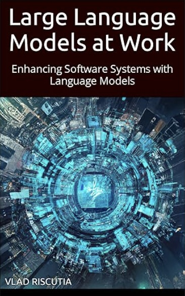

Books
Sector 36
Elena Drake thought she was on a simple extraction mission. But in Sector 36, nothing is simple - not when an Omega AI is pulling the strings, corporations deploy private armies, and humanity's first contact with aliens has gone catastrophically wrong.
Sector 36 is my first foray into fiction. The novel is a gritty exploration of a dystopian future where artificial intelligences rule the world, corporate power exceeds government authority, and human life is expendable.
The book hasn't been published yet, but I'm planning to share content and behind-the-scenes on Substack as I'm getting it ready for launch.
Excerpts
Large Language Models at Work
Large Language Models at Work is a book about leveraging large language models in software solutions.
Excerpts
- N-shot Learning
- Embeddings and Vector Databases
- Interacting With External Systems
- Planning
- Adversarial LLM Attacks
Data Engineering on Azure

Data Engineering on Azure reveals the architectural, operational, and data management techniques that power cloud-based data infrastructure built on the Microsoft Azure platform.
Excerpts
- Changing data classification through processing
- Ingesting data
- Machine Learning on Azure - part 1
- Machine Learning on Azure - part 2
- Machine Learning on Azure - part 3
Programming with Types

Programming with Types teaches you to design safe, resilient, correct software that's easy to maintain and understand by taking advantage of the power of strong type systems.
Excerpts
- A switchless state machine
- Common algorithms
- Higher kinded types: functors
- Higher kinded types: monads
- Variance
Articles
For Data Science @ Microsoft
- How we built self-serve data environment tools with Azure
- Azure Data Explorer at the Azure business scale
- Running machine learning at scale
- Common data engineering challenges and their solutions
- Partnering for data quality
- Partnering for metadata management
- Data distribution
Computability Series
- A short history
- Turing machines
- Tag systems
- Conway's game of life
- Elementary cellular automata
- Von Neumann architecture
- Machine implementation practicalities
- Lambda calculus
- LISP
Mental Poker Series
- Mental Poker
- Mental Poker Part 0: An Overview
- Mental Poker Part 1: Cryptography
- Mental Poker Part 2: Fluid Ledger
- Mental Poker Part 3: Transport
- Mental Poker Part 4: Actions and Async Queue
- Mental Poker Part 5: State Machine
- Mental Poker Part 6: Shuffling Implementation
- Mental Poker Part 7: Primitives
- Mental Poker Part 8: Rock-Paper-Scissors
- Mental Poker Part 9: Discard Game
- Mental Poker Part 10: Conclusions